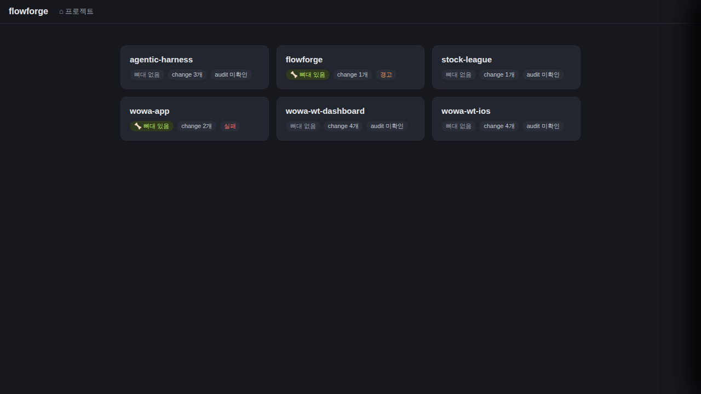

검증일: 2026-07-03T17:03:36+09:00 · 환경: server(적용: jest 24스위트 221/221 exit0 · tsc 0 · build 0 · lint 0 · dist 실기동 HTTP 실측 12픽스처) / web(적용: 실데이터 PROJECTS_ROOT=/home/gaegul 기동 UI 배지 grounding) / android·ios(적용 불가). 참고: tasks 3.1(라우트 통합 테스트 단언)은 미구현 — 시나리오 자체는 verify가 HTTP E2E로 독립 실측하여 커버. · run: run-20260703-0803
PASS 6 · FAIL 0 · 검증 안 함 0 · SKIPPED 0
| Requirement | Scenario | Layer | 검증 수단 | 탐지 근거(basis) | 결과 | 증거 |
|---|---|---|---|---|---|---|
| 카드의 audit 상태는 audit.json의 finalJudgment에서 채워진다 | finalJudgment "조건부" → warn 배지 | server | dist 실기동 E2E(HTTP) + jest 단위(a) + 실데이터 grounding | server/package.json(express·jest), 변경 파일 server/src/lib/projects.ts | ✓ PASS |  |
| 카드의 audit 상태는 audit.json의 finalJudgment에서 채워진다 | finalJudgment "FAIL" → fail 배지 | server | dist 실기동 E2E(HTTP) + jest 단위(b) + 실데이터 grounding | server/package.json(express·jest) | ✓ PASS | 픽스처 p-fail({"finalJudgment":"FAIL"}) → GET /api/projects auditStatus=fail 실측. 실데이터: wowa-app(audit.json FAIL) API 응답 fail + UI '실패' 배지 렌더(시나리오1 스크린샷에 동시 포착). jest (b) PASS. |
| 카드의 audit 상태는 audit.json의 finalJudgment에서 채워진다 | finalJudgment "PASS" → clean 배지 | server | dist 실기동 E2E(HTTP) + jest 단위(c) | server/package.json(express·jest) | ✓ PASS | 픽스처 p-pass({"finalJudgment":"PASS"}) → GET /api/projects auditStatus=clean 실측. jest (c) PASS. 참고: 소문자 'pass'(p-lower)는 unknown — 정확 일치만 clean. |
| 카드의 audit 상태는 audit.json의 finalJudgment에서 채워진다 | audit.json 없는 프로젝트는 unknown 폴백 | server | dist 실기동 E2E(HTTP) + jest 단위(d) + 실데이터 grounding | server/package.json(express·jest) | ✓ PASS | 픽스처 p-none(docs/audit.json 없음) → auditStatus=unknown, 서버 에러 없음(200 + 12카드 전체 반환, 서버 로그 무예외). 실데이터: agentic-harness·stock-league·wowa-wt-* 4개(audit.json 없음) 전부 unknown + UI 'audit 미확인'. jest (d) PASS. |
| 카드의 audit 상태는 audit.json의 finalJudgment에서 채워진다 | 깨진 JSON 또는 미인식 finalJudgment는 unknown 폴백 | server | dist 실기동 E2E(HTTP) + jest 단위(e)(f) | server/package.json(express·jest) | ✓ PASS | 픽스처 실측 5종 전부 unknown + 에러 없음: p-broken('{not json!!' 파싱불가), p-unver(UNVERIFIABLE), p-nofield(필드 없음), p-nonstring(finalJudgment:123 비문자열), p-empty(빈 문자열). 대량(5MB audit.json, p-big)도 정상 파싱→warn. jest (e)(f) PASS. |
| 카드의 audit 상태는 audit.json의 finalJudgment에서 채워진다 | audit.json의 호스트 절대경로는 신뢰하지 않는다 | server | 정적 grep(코드 경로 검사) + dist 실기동 E2E(HTTP) | server/src/lib/projects.ts L67-80 readAuditStatus | ✓ PASS | 정적: grep -rn scanRoot server/src/(테스트 제외) → 주석 1건뿐, 코드에서 scanRoot 미참조. 읽기 경로는 join(projectDir,'docs','audit.json')로 projDir에서 구성(L68), finalJudgment만 소비(L74). E2E: 픽스처 p-scanroot(scanRoot:'/etc/passwd-bogus-root' + finalJudgment:PASS) → auditStatus=clean — 경로 무시·finalJudgment만 반영 실측. |
| Requirement | null | 빈값 | 잘못된타입 | 경계값 | 에러경로 | 동시성 | 대량 | 특수문자 | 판정 |
|---|---|---|---|---|---|---|---|---|---|
| 카드의 audit 상태는 audit.json의 finalJudgment에서 채워진다 | ✓ | ✓ | ✓ | N/A | ✓ | N/A | ✓ | ✓ | ✓ 충분 |
✓=covered · N/A=해당없음(사유 hover) · ✗=missing. happy-path만이면 검증 불충분 → 최종 FAIL 차단.
| Layer | 상태 | ran | passed | failed | 근거/사유 |
|---|---|---|---|---|---|
| server | ✓ PASS | 6 | 6 | 0 | server/package.json(express+jest) 존재, 변경 파일 server/src/lib/projects.ts. jest 221/221(exit 0)·tsc exit 0·build exit 0·lint exit 0 + tsc 빌드 dist 실기동(PORT=8899, 픽스처 12종) HTTP 실측 |
| web | ✓ PASS | 1 | 1 | 0 | web/(vite+react) 존재. 프론트 코드 변경 없음(ProjectGrid.tsx AUDIT_LABEL 무손상 grep 확인) — 실데이터(PROJECTS_ROOT=/home/gaegul, PORT=8900) 기동 후 headless 브라우저 스크린샷으로 배지 렌더 grounding: flowforge='경고', wowa-app='실패', 나머지 4개='audit 미확인' |
| android | – SKIPPED | 0 | 0 | 0 | 적용 불가(안드로이드 레이어 없음) |
| ios | – SKIPPED | 0 | 0 | 0 | 적용 불가(iOS 레이어 없음, macOS 아님) |
✓ PASS 통과
archiveGate.open = true (PASS일 때만 true). verify.json이 이 값을 archive 게이트에 전달.
{kind=link}